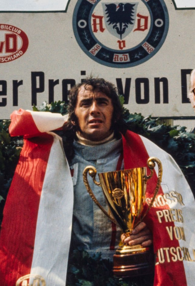

Nascido em 11 de junho de 1939, na Escócia, é um dos pilotos mais respeitados da Fórmula 1. Ele conquistou 3 campeonatos mundiais na década de 1960 e 1970 e é um defensor da segurança na F1, contribuindo significativamente para melhorias nas normas de segurança da corrida.